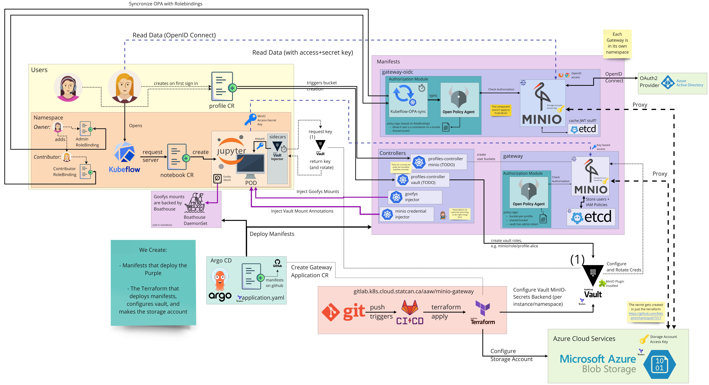
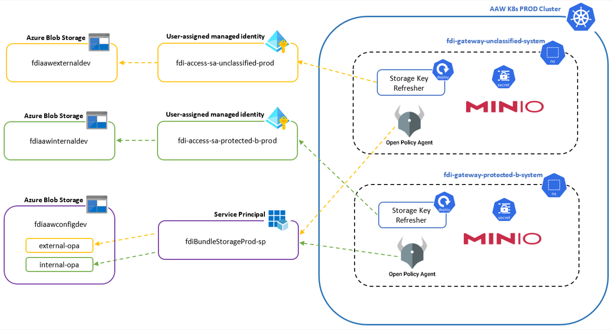

MinIO Gateway
Each MinIO Gateway consists of MinIO + OPA + Etcd, with MinIO running in gateway mode, etcd acting as a cache for the credentials, and OPA doing the policy enforcement. All instances except OIDC use Vault and the vault-minio-plugin for managing access/secret keys. There are four flavours of the gateway:
Note: Only the OIDC version will have an Ingress. See notes below
overlays/gateway-rw (Read-Write Vault Version)
This version is the stock version, with OPA configuration to allow users to both read and write from MinIO.
Note: This system will not have an Ingress object. This will only be accessed by an internal URL, which prevents tokens from being used from outside the cluster.
overlays/gateway-ro (Read-Only Vault Version)
This version is the stock version, with OPA configuration to only allow READ operations from users.
The typical use-case here is to provide a read-only mirror of the data. For example, unclassified data can be made available as a read-only system to the protected-b notebooks, to allow use-cases like webscraping.
Note: This system will not have an Ingress object. This will only be accessed by an internal URL, which prevents tokens from being used from outside the cluster.
overlays/gateway-oidc (Read-Write OIDC Version)
This version does not use Vault, but instead uses OpenID Connect with Azure Active Directory to login and kubeflow-opa-sync to get RoleBindings in the namespace. A user can connect to a bucket over OIDC if their username is assigned a contributor role in the namespace.
overlays/gateway-bundle (Remotely Configured Vault Version)
The bundle version refers to OPA Bundles, the use case here is when we are providing access to data within the cluster, but the allowed users and rules around the data is not determined by us. In this case, we are working with the FAIR Data Infrastructure team, who is responsible for the data and governance over it.
components/aad-pod-identity
For the MinIO Gateway use case with the FDI team, storage accounts are managed by the FDI team. MinIO Gateway needs a storage account name and key to access buckets; however, it would be a security risk to manually add storage account credentials as a CI/CD variable or a secret. AAD Pod Identity was our solution to this.
AAD Pod Identity allows a pod to assume a user-assigned identity. This user assigned identity is given permissions to get the storage account key. The pod writes the key to a secret, and MinIO Gateway gets the credentials from the secret.
Architecture
Most aspects of the architecture are captured in the diagram below (which pictures a Vault version plus and OIDC version). Note that each MinIO gateway instance resides in a different namespace, mostly to avoid name conflicts as well as to be able to apply network policies at the namespace level.

Notable aspects of the design:
-
All instances live in their own namespace.
-
This is to simplify name conflicts and network policies
- Expected use is to use the
data.statcan.gc.ca/classificationlabel on the namespace to restrict connections. - Only the
minio-gateway:9000service in the namespace should be reachable by notebooks. -
Vault needs access to all namespaces (except the OIDC setup). All need to be able to connect to Azure.
-
Many systems share one storage account. A single "tenant" could have a
readwrite,readonly, andoidcinstance, to allowUnclassified Notebook Access,Protected-B Notebook Access, andWeb-Browser Access, respectively. -
Only the OIDC Variant gets an ingress. The others are connected to internally only.
-
By Design, tokens cannot be used from outside the cluster by users. Outside-of-cluster traffic is only possible through OIDC.
-
The Vault versions need the following configurations changes:
- Instantiate a gateway via the terraform module.
- In the terraform add the new MinIO instance's namespace to the istio clusterrbacconfig in order to enable Istio RBAC in the namespace.
- Add to the MinIO Credential injector
- Add to the Goofys injector
- Add to the Kubeflow Controller
- Grant Vault access by configuring the terraform for Vault which creates the necessary
config,mountsandrolesfor each MinIO instance. At the moment this is done from within the terraform module that deploys these ArgoCDApplications. - Configure the Vault roles for
profile-configuratorandboathouseto allow them to interact with the MinIO instances. This is in the dedicatedvaultterraform repo.
FDI MinIO Integration Architecture

Special note on Boathouse
At the moment Boathouse can only connect to external URLs (ingresses) because the CSI driver is not within the cluster and cannot use cluster DNS or kube-proxy.
As a result, the current workaround is to have dedicated {instance}-boathouse.{domain} ingresses for boathouse to connect to, and then these ingresses will be restricted to only communicate with the Boathouse service. At the moment the ingress is not locked down, but the proposed solution is to have the ingresses live on a private ingressgateway with a fixed IP, and then configure a firewall to allo communication only to/from that ingressgateway and boathouse.
Using external addresses within the cluster
Because of the trafficPolicy: Local setting on the cluster, commands like curl https://kubeflow.{domain} actually fail within the cluster (unless you happen to initiate the request from the same node). This is side-stepped by configuring CoreDNS to bypass this, by routing the requests to the ingress-gateway, which then manages the traffic.
apiVersion: v1
kind: ConfigMap
metadata:
labels:
addonmanager.kubernetes.io/mode: EnsureExists
k8s-app: kube-dns
kubernetes.io/cluster-service: "true"
name: coredns-custom
namespace: kube-system
data:
ingress.override: |
rewrite name vault.aaw.cloud.statcan.ca istio-ingressgateway.istio-system.svc.cluster.local
rewrite name minio-gateway-standard-system-boathouse.aaw.cloud.statcan.ca istio-ingressgateway.istio-system.svc.cluster.local
rewrite name minio-gateway-premium-system-boathouse.aaw.cloud.statcan.ca istio-ingressgateway.istio-system.svc.cluster.local
rewrite name minio-gateway-standard-ro-system-boathouse.aaw.cloud.statcan.ca istio-ingressgateway.istio-system.svc.cluster.local
rewrite name minio-gateway-premium-ro-system-boathouse.aaw.cloud.statcan.ca istio-ingressgateway.istio-system.svc.cluster.local
minio-credential-injector
The minio credential injector is a mutating webhook that uses Vault in order to inject MinIO crendentials into notebooks and argo workflows.
You would need to add the new MinIO gateway to the list of instances in the ConfigMap used by the aaw-minio-credential deployment.
goofys-injector
The goofys-injector injects MinIO volume configuration into Jupyter Notebook pods. It mounts buckets as file systems in a Jupyter Notebook.
You would need to add the new MinIO gateway to the list of instances in the ConfigMap used by the goofys-injector deployment.
profile-controller
The profile-controller is a Kubeflow controller which sets PodDefaults and Vault policies for all Profiles.
You would need to add the new MinIO gateway to the list of minio_instances in the kubeflow-controller deployment.
The kubeflow-controller was the original mechanism for adding per-profile resources across namespaces. Its moving to a refactored design, the profiles-controller, which factors the controllers into separate modules which execute independently. The monolithic kubeflow-controller will eventually be removed.